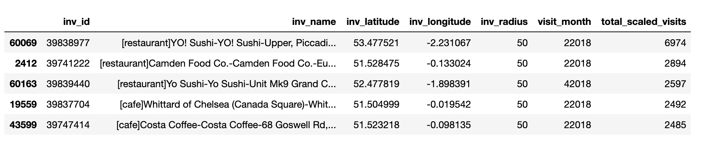

Created by Carlos Mougan
Case Study statement
Exploratory Data Analysis
Exploratory Data Analysis
Data From SDK
Growind/Declining Outlets

Data Errors
Bars evolution through months
Cafe evolution through months
Restaurants evolution through months
Alsmot identical behavior
K-S Test shows no statistical significance
Let's build a model and try to predict the number of visits per month
RMSE = 104
RMSE = 94